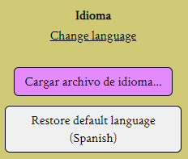
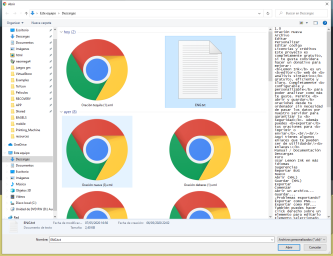
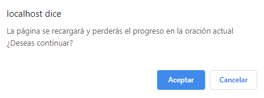

Using Lemon Ink in more languages
Natively, Lemon Ink is only available in Spanish, but actually you can use it in your own language with an external file.
Loading a language file
First at all you need to download a language file, you can get it from the Lemon Ink Community.
Then select "Cargar archivo de idioma" (Which means: Load language file), and select your language file from the computer.



Now select "Aceptar" and done.
Creating a language file
You can create a language file and upload it for other users to download in the Lemon Ink Community.
Check out Create a language.